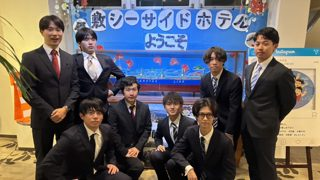
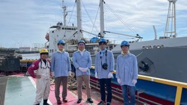
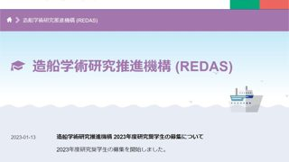
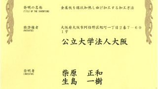

※画像は生成AIで作成したイメージです。このテーマの説明文は準備中です。
関連するお知らせ（題名から自動で集めたもの。9件）

報告：第18回大阪公立大学－新来島サノヤス造船 技術交流会に 柴原研究室から 山邉晃瑠さん、清水大毅さん、原田青空さん、横山侑祐さん、生島研究室から 生島一樹 准教授、中川陽太さん、井上正貴さん、岡田頼騎さん、 藤本陽紀さん、高橋侑也さん が参加しました。 報告：柴原研究室 B4 清水大毅さん、B4 原田青空さん、B4 横山侑祐さん が「海洋システム特殊講義」という授業の一環として新来島サノヤス造船にて工場実習を行いました。
報告：柴原研究室 B4 清水大毅さん、B4 原田青空さん、B4 横山侑祐さん が「海洋システム特殊講義」という授業の一環として新来島サノヤス造船にて工場実習を行いました。 報告：第1回関西スマート工場EXPOに参加し、最新のIoT/ロボット機器等について見学しました。
報告：第1回関西スマート工場EXPOに参加し、最新のIoT/ロボット機器等について見学しました。 報告：第17回大阪公立大学－新来島サノヤス造船 技術交流会に 柴原研究室、生島研究室から、柴原正和 准教授、三尾祥太郎さん、原田茂汰さん、山本航平さん、横山暁生さん、渡邉倖平さん (柴原研)、 熊田裕之さん、石本桃雅さん、迫雅悦さん (生島研) が参加しました。
報告：第17回大阪公立大学－新来島サノヤス造船 技術交流会に 柴原研究室、生島研究室から、柴原正和 准教授、三尾祥太郎さん、原田茂汰さん、山本航平さん、横山暁生さん、渡邉倖平さん (柴原研)、 熊田裕之さん、石本桃雅さん、迫雅悦さん (生島研) が参加しました。 柴原研究室 横山暁生 さんが10/13に名村造船所で行われた大型船見学会に参加しました。
柴原研究室 横山暁生 さんが10/13に名村造船所で行われた大型船見学会に参加しました。
新来島サノヤス造船大阪製造所を訪問し、修繕船を見学をしました。 柴原研究室 前田新太郎 特任助教が「造船学術研究推進機構 2024年度 研究助成」に採択されました。
柴原研究室 前田新太郎 特任助教が「造船学術研究推進機構 2024年度 研究助成」に採択されました。
前田新太郎 特任助教が、 日本造船工業会 造船学術研究推進機構(REDAS)に応募していた研究テーマの採択が決定しました。
柴原先生、生島先生、山田祐介さん、前川真奈海さん、阪本啓志さんらが造船時の板曲げに用いる線状加熱の加熱法案作成方法に関する特許を取得しました。